Departamentos De Salta
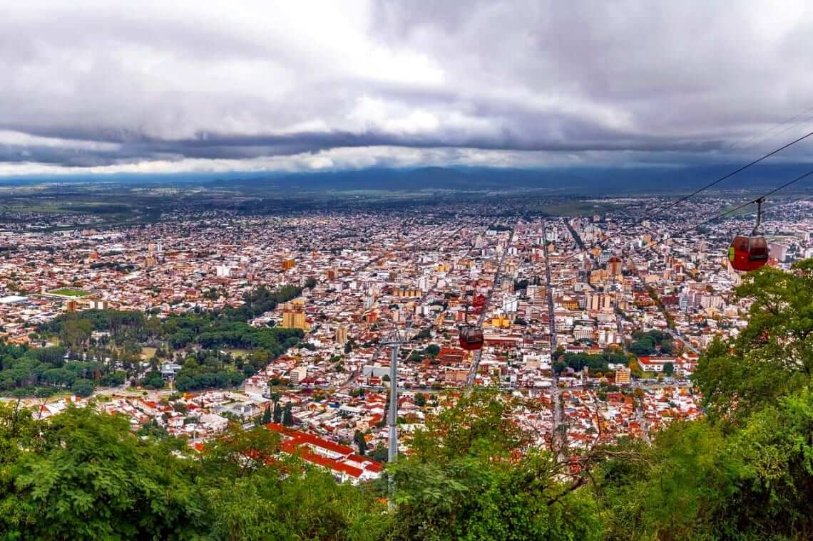
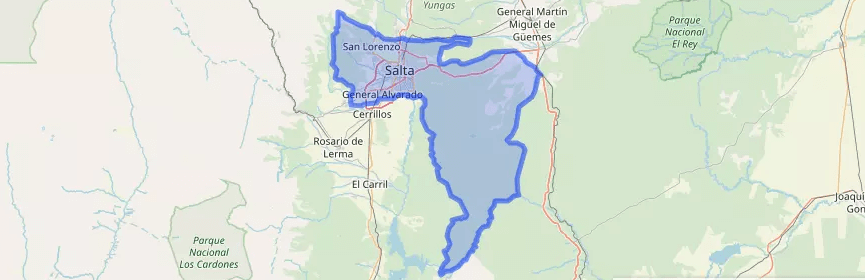
Capital
Se encuentra en el centro de la provincia. Tiene la forma aproximada de una L invertida. Limita con los departamentos de La Caldera, General Güemes, Metán, La Viña, Chicoana, Cerrillos, y Rosario de Lerma. Es montañoso al este, con elevaciones entre 1200 y 1300 m s. n. m., y llano al oeste, correspondiendo este último sector al valle de Lerma.
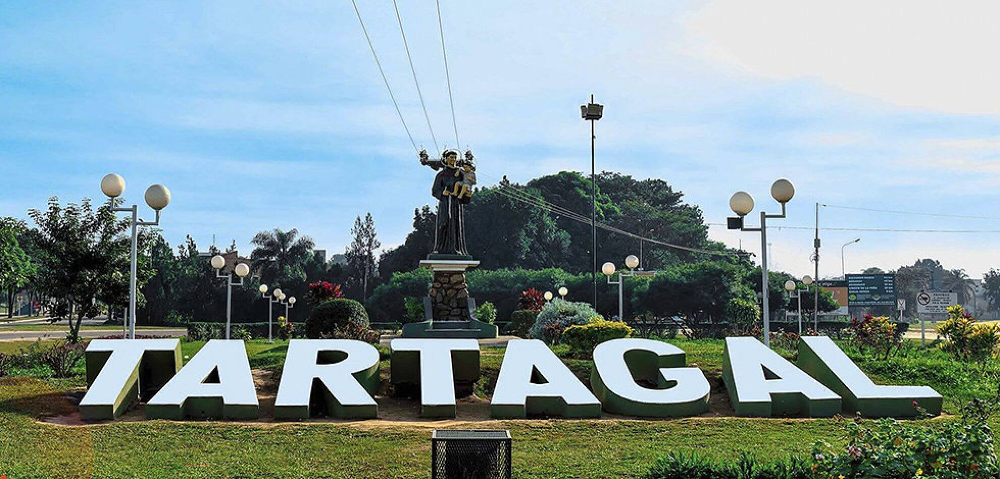

General José de San Martín
Tiene una superficie de 18.257 km2 y limita al norte y al oeste con el Estado Plurinacional de Bolivia, al este con el departamento de Rivadavia, al sur con el de Orán
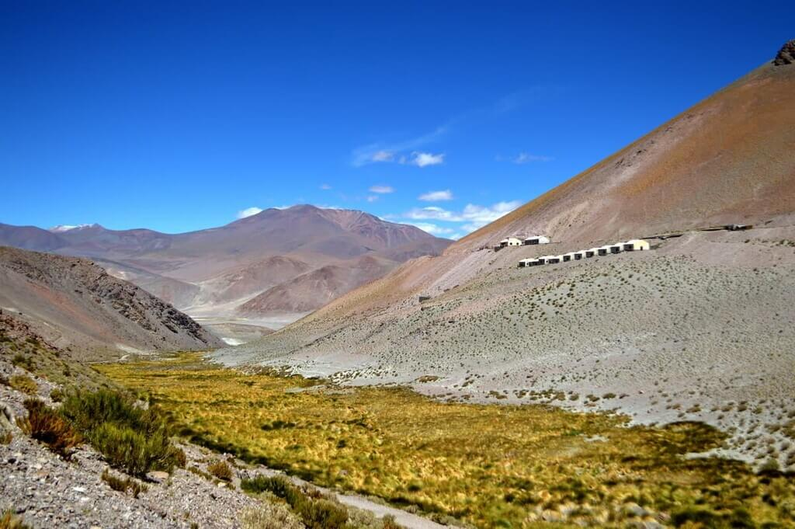
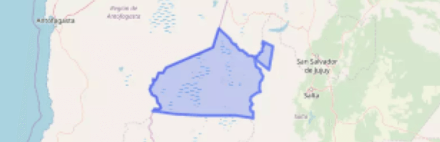
Los Andes
Es el segundo departamento más extenso de la provincia, y a la vez, el menos densamente poblado, con una densidad de menos de 1 habitante por km cuadrado.
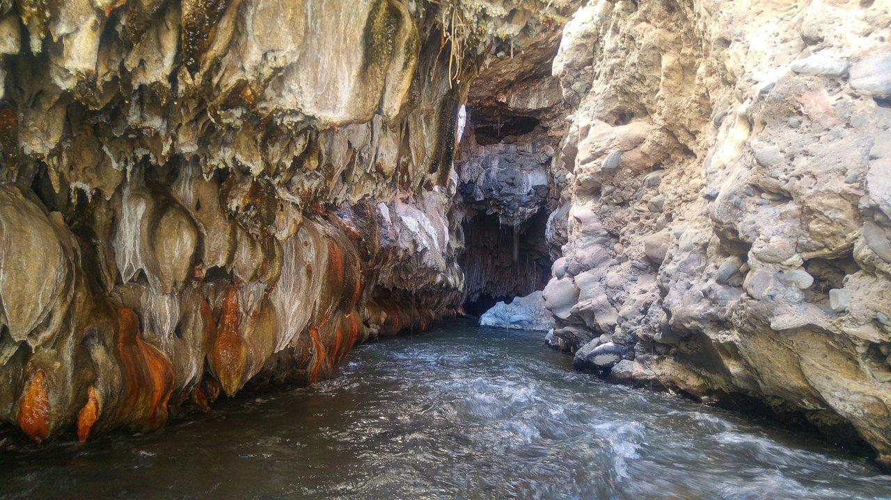
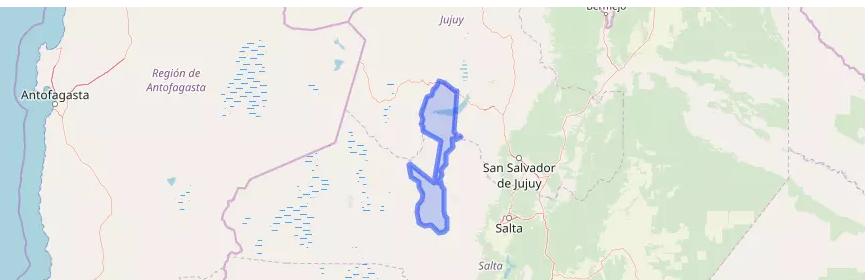
La Poma
Comprendía los partidos de Payogasta, La Poma y San Antonio de los Cobres. En mayo de 1867 se declaró cabecera departamental al pueblo de La Poma. El 20 de noviembre de 1869 una ley fijó nuevos límites entre los departamentos de Cachi y Payogasta, pasando a denominarse este último como La Poma. En 1902 la provincia de Salta cedió a la Nación el distrito de San Antonio de los Cobres para que sirviera de capital del Territorio Nacional de Los Andes, quedando desvinculado de Salta y del departamento de La Poma
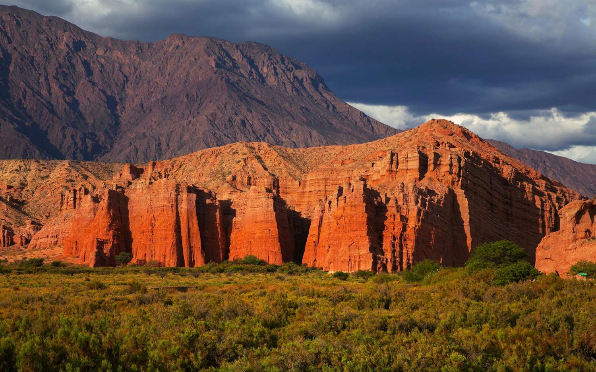
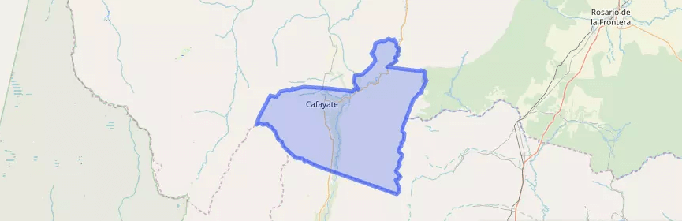
Cafayate
Se encuentra en el sur de la provincia. Limita con los departamentos de San Carlos, La Viña, Guachipas y con las provincias de Tucumán y de Catamarca. Los principales ríos de la región son los ríos Calchaquí, de recorrido norte-sur y Santa María, que se dirige de sur a norte
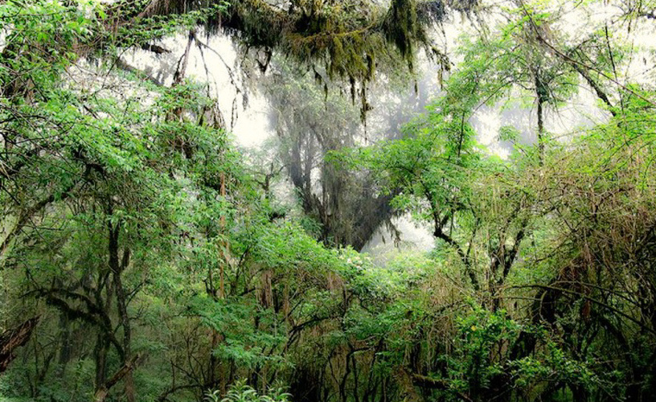
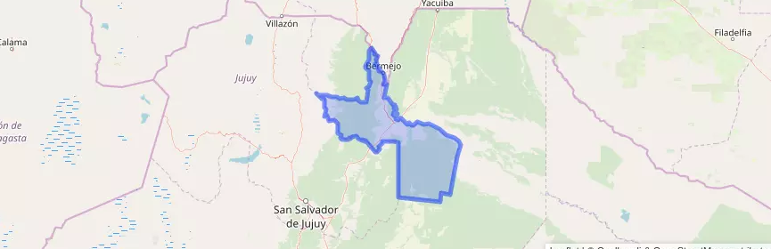
Oran
Tiene una superficie de 11 892 km² y limita al norte con los departamentos de Santa Victoria, Iruya y San Martín y el Estado Plurinacional de Bolivia, al este con el departamento de Rivadavia, al sur con el de Anta y al oeste con la provincia de Jujuy.
Cuesta del Obispo
La Cuesta del Obispo corresponde a un tramo zigzagueante y empinado de la ruta provincial 33, ubicada entre el paraje Maray de la quebrada de Escoipe y la Piedra del Molino, en la provincia de Salta, norte de la República Argentina
Tren a las Nubes
El Tren a las Nubes es un servicio ferroviario turístico argentino sobre el ramal C-14 del Ferrocarril General Manuel Belgrano en el tramo que une San Antonio de los Cobres con el viaducto La Polvorilla, sobre la Cordillera de los Andes
Garganta Del Diablo
La Garganta del Diablo en Cafayate no es una más de las formaciones de la Quebrada de las Conchas, es la más sorprendente, Los paredones inmensos de roca rojiza forman un tubo vertical similar a la misma boca del diablo
Parque Los Cardones
El parque nacional Los Cardones se encuentra cerca de la localidad de Payogasta en la región centro-sur de la provincia de Salta en Argentina.